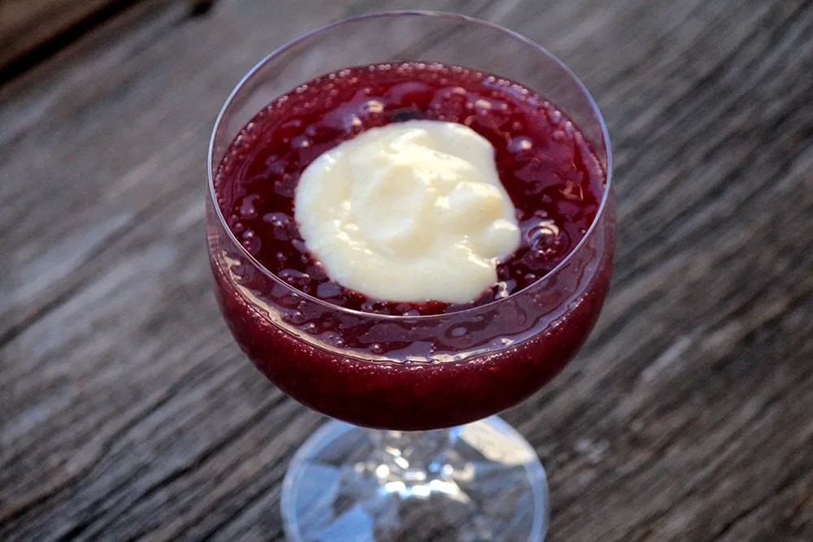

Back to home
Red Wine Sago with Cream

Creamy and flavorful dessert
Red Wine Sago with Cream is a delicious dessert that is perfect for any occasion. Whether it's a birthday party or a family gathering, this dessert is sure to be a hit.
Ingredients
This recipe will be used a container that can hold 1 liter of water as a measurement for the sago and the cream.
-
1 liter of water
-
1 cup of sago
-
3 cups of red wine
-
2 cups of sugar
-
1/2 cup of milk
-
2 tablespoons of cornstarch
-
1 egg yolk
-
1 tablespoon of vanilla extract(optional)
Steps
-
For the sago, pour the water into a pot and bring it to a boil
-
Add the sago into the boiling water and stir it for 10 minutes
-
Turn off the heat and cover the pot with a lid
-
Let the sago sit for 15 minutes
-
Drain the sago and rinse it with cold water
-
Pour 1 cup and a half of sugar into the sago pot and add the red wine
-
Bring the sago to a boil and stir it until the sugar dissolves
-
For the cream, pour the milk, cornstarch, egg yolk, 1/2 cup of sugar, and vanilla if you want, to add it into a pot
-
Stir the cream until it thickens
-
Pour the sago into a bowl and add the cream on top
-
Let it cool down and enjoy!